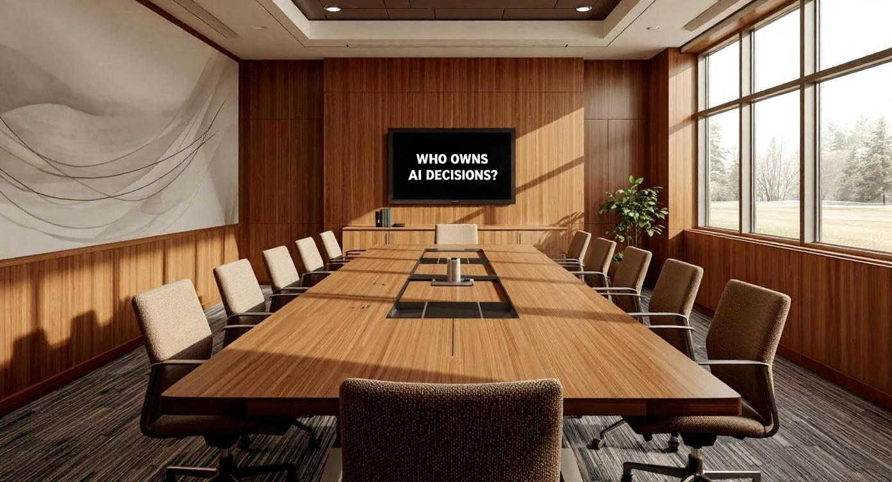
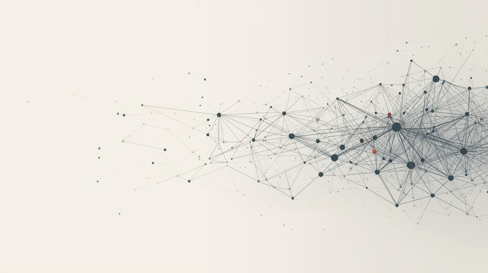

Credit Union AI Use Cases: Practical Examples That Matter Today
Where AI is already showing up in fraud, member service, lending, compliance, marketing, and internal operations.
Read insight →
Practical explainers and playbooks for boards, executives, and frontline teams adopting AI with member trust in mind.
Where AI is already showing up in fraud, member service, lending, compliance, marketing, and internal operations.
Read insight →
AI is embedded in fraud tools, lending workflows, and employee systems. The gap is not adoption, but visibility and governance.
Read insight →How CES trends point to AI becoming core infrastructure, decision support, and conversational by default.
Read insight →
Identify repetitive work, measure impact, and define handoffs where humans stay in control.
Read insight →